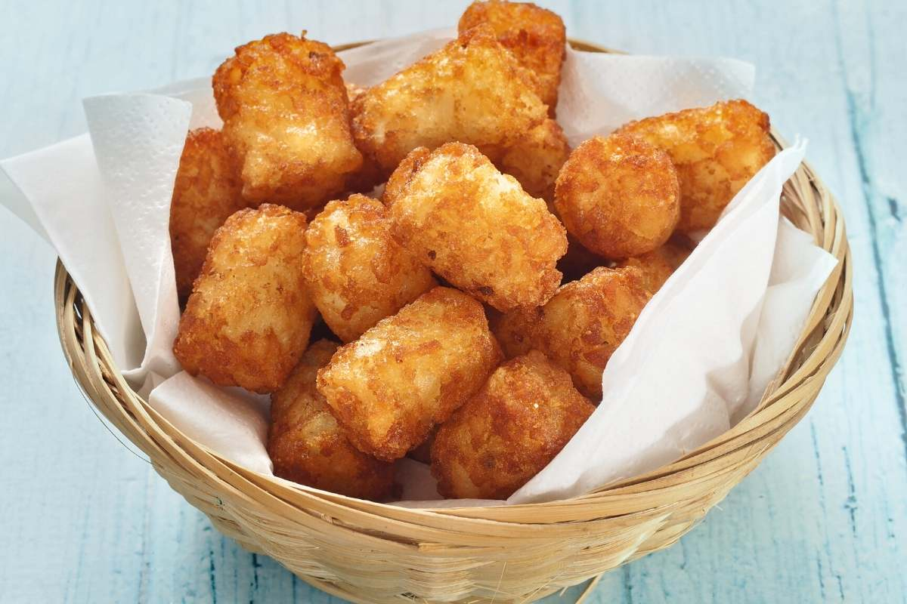

Crispy Tater Tot Recipe

Description
Tater tots are a fantastic food because they go with almost anything as a side. Tater tots are unmatched as a side at breakfast, lunch, OR dinner. Heck, sometimes I even have some tater tots all by themselves! Check my recipe below so you can enjoy some of this crispy goodnes
Ingredients
- 2 pounds russet potatoes, peeled
- 1 tbsp all-purpose flour
- 1 tsp garlic powder
- 1/2 tsp onion powder
- 1/4 tsp ground oregano
- 1/4 tsp dried dill
- Kosher salt and black pepper to taste
- 1 cup vegetable oil
- 2 tbsp chopped resh parsley leaves
Steps
- Place potatoes in a large saucepan and cover with cold water by 1 inch. Bring to a boil and cook until parboiled, about 6-7 minutes; drain well and let cool.
- Using a box grater, finely shred potatoes. Using a clean dish towel or cheese cloth, drain potatoes completely, removing as much water as possible.
- Transfer potatoes to a large bowl. Stir in flour, garlic powder, onion powder, oregano and dill; season with salt and pepper, to taste. The mixture should be workable but dry. Form potatoes into tots.
- Heat vegetable oil in a large stockpot or Dutch oven over medium heat.
- Add tots to the skillet, 5 or 6 at a time, and cook until evenly golden and crispy, about 3-4 minutes. Transfer to a paper towel-lined plate.
- Serve immediately, garnished with parsley, if desired.
Recipe Adapted From: Tater Tot Recipe
Odin Recipes Home Page